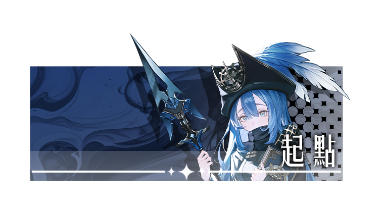

誰先排出有利開局、誰先卡高地、誰先讓普通攻擊切換成強化攻擊
正式版的節奏不是憑空爆發，而是來自角色條件、地形等級與行動點數分配被正確接在一起。
《艾爾芙卡》的核心玩法圍繞在陣容配置、站位策略與地形操控。玩家需要在戰鬥開始前完成三人配隊與部署，進場後再利用多層高度、技能改地與 10 點行動點數，逐步建立戰術優勢。

影片裡最值得注意的是戰前佈位、高度爭奪、技能改地與強化攻擊的覆蓋時機如何接成同一個回合。
正式版的節奏不是憑空爆發，而是來自角色條件、地形等級與行動點數分配被正確接在一起。
每關都要從角色池挑出三名不重複角色，先把隊伍組合與初始站位排好。
每位角色都擁有技能與強化攻擊，且技能本身就會帶有改變地形高低的效果。
高度會決定加成、推落與引爆後果，普通攻擊與技能都會持續重寫戰場。
從角色池挑出三人，並在指定區域安排初始位置，決定第一回合攻守線。
角色站上有利高度能觸發額外能力，也更容易把強化攻擊條件湊齊。
技能可以升高、降低或指定區域高度，普通攻擊也能把敵人推上去或推下來。
每回合 10 點行動點數可自由分配，決定你要集中單點爆發還是整隊同步推進。
正式企畫書把地形規則寫得非常具體。理解這些規則，才會知道為什麼某些回合看起來只是站位，其實已經在鋪後面的引爆或強化條件。
移動、攻擊與技能都會消耗行動點。只要點數足夠，同一角色也能在單回合內連續推進。
當角色達成指定高度或條件時，普通攻擊會被強化攻擊覆蓋。這有時是爆發窗口，有時也可能反成限制。
正式版的艾爾芙卡，不是先把人送上前線再看情況，而是從配隊、站位、地形到行動點數，一整回合都必須先算好。
玩法核心